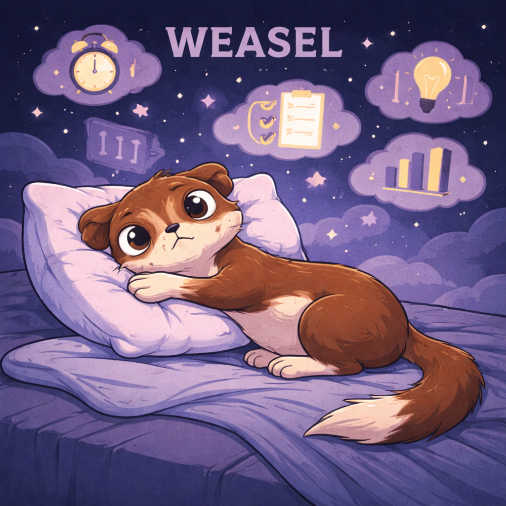
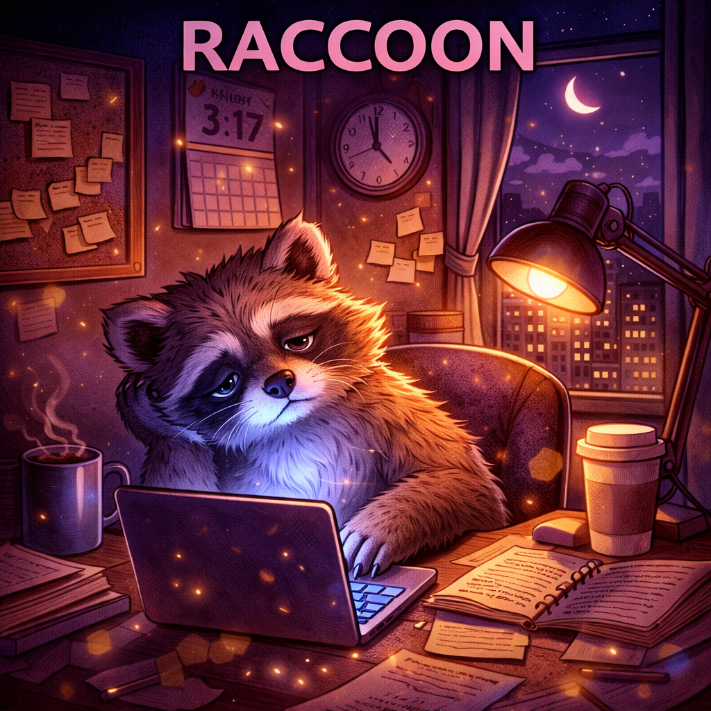

1. Sleep Quantity and Sleep Debt
First we ask whether you are simply getting enough sleep. Some people have a sleep problem. Others have a time problem.
Evidence-based sleep assessment by SleepSpace
Most people are not bad sleepers. They are misunderstood sleepers. The Sleep Pyramid helps reveal whether the real issue is sleep debt, circadian timing, falling asleep challenges, stress reactivity, airway strain, or a more specific overlap profile. That is how SleepSpace maps you into one of 70 Sleep Animals with a plan that actually fits. Your onboarding quiz gives you the first result, and the SleepSpace app can make that result more accurate over time with advanced sleep tracking and wearable integrations.


The core framework
Good sleep is not one thing. It is a stack of biological and behavioral layers. If we only ask whether you are tired, we miss the cause. The Sleep Pyramid gives us a sharper lens into how much sleep you get, how stable it is, when it happens, what is disrupting it, how activated your nervous system is, and how restored you feel the next day.

First we ask whether you are simply getting enough sleep. Some people have a sleep problem. Others have a time problem.
Falling asleep is only part of the story. Waking at 2 AM, waking too early, noise sensitivity, pain, and partner disturbance all belong here.
This is the rhythm layer. Are you a true night owl, a morning lark, a shift worker, a frequent traveler, or somebody whose schedule never fully stabilizes?
Airway issues, snoring, heat, pain, body discomfort, and restless movement can degrade sleep quality even when time in bed looks decent.
When the brain stays in go-mode, bedtime becomes effortful. Racing thoughts, grief, stress-triggered sleep, and staying awake at night patterns all live on this layer.
The final question is simple: are you actually waking up restored? If not, your sleep may be long enough on paper but not delivering real recovery.
Why this matters
The internet is full of one-size-fits-all sleep tips. But generic advice fails when your real issue is not “sleep” in the abstract. It may be chronic sleep debt, a circadian rhythm problem, airway strain, caregiving overload, temperature sensitivity, or a high-performing brain that refuses to switch off. The 70 Sleep Animals framework gives language to those differences.
Get a More Precise Result
Your onboarding quiz gives you a strong starting profile, but the SleepSpace app can make that profile more precise over time. With advanced sleep tracking, nightly trends, and wearable integrations, SleepSpace can separate temporary sleep disruption from a true long-term pattern, detect changes earlier, and refine the recommendations that fit you best.
How SleepSpace turns data into insight
SleepSpace combines what you report, what your schedule reveals, and how your nights actually look. We are not trying to label people for fun. We are trying to make the right next step obvious. When you connect tracking data and wearable inputs inside the app, the analysis becomes more precise and more useful over time.
Sleep debt, continuity, timing, airway or body load, stress arousal, and next-day restoration each get their own signal.
Racing thoughts, middle-of-the-night waking, heat, snoring, travel, parenting disruption, and schedule chaos all change how a sleep pattern should be interpreted.
Instead of flattening everyone into four chronotypes, we choose a phenotype that feels recognizable and clinically useful, then improve its accuracy inside the app as tracking and wearable data accumulate.


A few recognizable profiles
A healthy sleeper and a sleep-deprived shift worker should not get the same advice. Neither should a jet-lagged traveler and someone whose body clock is naturally delayed.
Flexible Sleeper
Consistent Restorer
Short-Sleep Ace
Balanced Builder
Long-Sleep Restorer
Precision Performer
How the 70 animals are built
Each profile reflects a mix of timing, sleep pressure, continuity, stress load, and physical disruptors. The animal is simply a memorable way to describe a real sleep pattern and point to the right next move. The more real-world sleep data you collect in the app after your onboarding quiz, the more precisely SleepSpace can tell whether your strongest pattern is stable, seasonal, stress-related, or changing over time.
Morning types, evening types, shift workers, irregular sleepers, and travelers can all look “tired” for completely different reasons.
Some sleepers are under-recovered because life is too full, not because their biology is broken. Quantity matters.
Hyperarousal, racing thoughts, bedtime dread, grief, and night waking create a very different treatment path than simple schedule drift.
Snoring, airway strain, pain, heat, environment, and body discomfort can make a long night feel completely unrefreshing.
The full catalog
These profiles now reflect the full 70-animal framework in the Ruby service. Each one carries a more specific description, a clearer next-step direction, and imagery or placeholders tied to the local asset set used by the generated animal pages.

Your onboarding quiz gives you the first-read phenotype. After that, the SleepSpace app can sharpen the analysis with nightly tracking, wearable integrations, and multi-night patterns that separate a temporary rough patch from a stable sleep animal.
Insomnia and Fragmentation
Trouble falling asleep, staying asleep, or fully powering down tends to dominate this cluster.
High-Performance Insomniac
Your brain runs at full speed, even when your body is ready for bed.
You tend to carry momentum into the night. Racing thoughts, pressure to perform, and difficulty disengaging can delay sleep even when you are clearly tired. This pattern often looks productive on the outside, but over time it can chip away at recovery, mood, and consistency. The good news is that this is highly trainable when you pair the right bedtime wind-down with a sleep schedule your nervous system can trust. People in this phenotype often need permission to stop striving before they can start sleeping.
Best next step: Start with a 20-minute decompression ritual and a consistent sleep window. Inside SleepSpace, begin with guided wind-down audio, thought-unloading, and a simple schedule target that helps your brain stop performing and start sleeping.

Sleep-Onset Spinner
You feel tired, but your system does not flip fully into sleep mode.
Your main challenge is getting to sleep in the first place. Once your head hits the pillow, you may start thinking, planning, reviewing, or simply waiting for sleep to happen. That waiting can become part of the problem and make bedtime feel effortful. A gentler, more repeatable pre-sleep rhythm usually works better than trying harder. The less sleep feels like a performance test, the more likely your system is to finally let go.
Best next step: Focus first on reducing sleep latency, not fixing everything at once. SleepSpace can guide you through calming audio, structured bedtime timing, and behavioral tools that make sleep feel automatic again.

Anxious Sleeper
Your mind gets louder when the room gets quiet.
Worry tends to arrive right when you are trying to let go. You may replay conversations, think through tomorrow, or scan for what could go wrong. Sleep becomes lighter and more fragile when your nervous system stays in problem-solving mode. This type of sleep usually improves when the body feels safer and the mind has a place to put unfinished thoughts. For many people here, the real shift happens when nighttime stops being the only time the mind tries to process the day.
Best next step: Try a structured mental off-ramp before bed. SleepSpace can help with guided breathing, sleep meditations, and routines that lower nighttime hyperarousal.

Featherlight Sleeper
Sleep comes, but it stays close to the surface.
You may drift off, but your sleep is light, sensitive, and easy to interrupt. Noise, stress, temperature, or even anticipation can keep your system half-alert. This often leads to long nights that technically contain sleep but do not feel deeply restorative. Strengthening sleep continuity usually matters more for you than simply increasing time in bed. Your sleep tends to improve when the night feels more protected, buffered, and predictable from start to finish.
Best next step: Improve the depth and continuity of your sleep environment. SleepSpace can help by layering sound, schedule guidance, and bedtime routines that reduce nighttime reactivity.

2 AM Waker
Falling asleep may not be the problem. Staying asleep is.
Your nights tend to break in the middle. You may wake for stretches, feel alert too early, or find yourself stuck awake after a brief interruption. That pattern can quietly drain recovery even if bedtime looks decent on paper. Your best path forward is usually about reducing awakenings and making it easier to settle back down. What matters most is teaching the night to feel continuous again instead of something you have to restart over and over.
Best next step: Train your nights to become more continuous. SleepSpace can help with schedule tuning, relaxation tools for middle-of-the-night wakefulness, and personalized insights from your diary.

Too-Early Riser
Your body clock may be ending the night before you are done recovering.
You may wake up earlier than you want and struggle to get back to sleep. This can happen with stress, circadian timing, or a sleep window that is subtly misaligned with your biology. Over time, it can create the feeling that your nights are cut short even when you are trying hard to do everything right. The solution is often less about force and more about rhythm. When this phenotype improves, mornings stop feeling like an unwanted early ending and start feeling like a natural wake-up.
Best next step: Work on timing, light exposure, and consistency. SleepSpace can help you shape a schedule that supports a later final awakening without making nights feel effortful.

Napper Rebounder
Your system is trying to recover wherever it can.
You may be borrowing wakefulness from naps, caffeine, or short bursts of energy. That can help you get through the day, but it can also make nights less consolidated and blur your true sleep need. Your pattern suggests recovery pressure is building and getting paid back in uneven ways. What you need most is a more stable rhythm, not just more random rest. The goal is to move from opportunistic recovery to recovery your body can actually count on.
Best next step: Reduce rebound sleep behaviors and make recovery more predictable. SleepSpace can help you build a steadier routine so sleep pressure lands where it belongs at night.

Fragmented Ruminator
Your sleep keeps getting interrupted by a mind that reopens the day.
This profile blends sleep maintenance difficulty with mental reactivation. You may fall asleep, wake during the night, and then find that thinking rushes back in before sleep does. Nights can feel mentally sticky rather than physically restless. The best path forward is to reduce both nighttime arousal and the number of openings your brain uses to start thinking again. This phenotype usually benefits from making the middle of the night feel less cognitively available.
Best next step: Target both continuity and mental quieting. SleepSpace can help with middle-of-the-night audio, schedule stability, and structured thought-offloading.
Circadian and Schedule
These profiles are often more about timing, travel, work hours, and light exposure than broken sleep itself.

True Night Owl
You are not broken. Your clock simply runs later.
You naturally feel sharper later in the day and may do some of your best thinking at night. Trouble begins when life expects an early-morning version of you that does not match your biology. This can create chronic sleep debt even when your schedule makes perfect sense to your body. The goal is not to erase your rhythm, but to make it work better with real life. When supported well, this phenotype can become a strength instead of a constant source of social jet lag.
Best next step: Protect consistency and strategically use light, timing, and routines. SleepSpace can help late chronotypes get better sleep without feeling like they have to become someone else.

Morning Sprinter
Your energy wants to arrive early and be used early.
You tend to wake with momentum and may do your best work earlier in the day. This can be a major strength, especially when your sleep remains consistent and protected. Problems usually show up when social or work demands push your bedtime later than your body likes. The right next step is to help your routine support the rhythm you already have. Your sleep is often best when your evenings are protected just as deliberately as your mornings.
Best next step: Protect consistency and avoid creeping bedtime delays. SleepSpace can help reinforce your rhythm and prevent early-morning wakefulness from turning into shortened nights.

Irregular Schedule Sleeper
Your sleep is adapting to a moving target.
Your bedtime, wake time, or day structure changes enough that your sleep rhythm has trouble getting anchored. Even when total sleep looks reasonable, inconsistency can make your nights feel less restorative and your mornings less predictable. This pattern is common when work, caregiving, social demands, or variable routines keep moving the goalposts. The biggest win usually comes from creating a few anchors your body can rely on. A small amount of regularity often helps this phenotype more than a large amount of effort.
Best next step: Start by stabilizing one or two non-negotiable timing cues. SleepSpace can help you create a realistic schedule with enough flexibility to fit your life without losing rhythm.

Jet-Lag Hopper
You may be sleeping in multiple time zones, even when your body is still in the last one.
Frequent travel or repeated time-zone shifts can make sleep feel detached from home base. You may be tired at the wrong times, hungry at odd hours, and unable to predict when your body will actually feel ready for sleep. This is not just inconvenience. It is a real circadian stressor. Strategic light, schedule shifts, and pre-travel planning can make a big difference. The more portable your recovery system becomes, the less every trip has to feel like starting over.
Best next step: Use travel-specific circadian support. SleepSpace can help you align light, sound, and timing to reduce the drag of jet lag and help your body adapt faster.

Shift Worker
Your sleep has to perform under conditions biology did not design for.
Shift work or rotating schedules can make sleep feel fragmented, mistimed, or always slightly off. You may do everything right and still feel like your body clock is pushing back. That does not mean there is no solution. It means you need tools designed for circadian disruption, not generic sleep advice. This phenotype improves when sleep is treated like a protected recovery block rather than an afterthought squeezed between obligations.
Best next step: Use strategic routines for off-hours sleep and alertness. SleepSpace can help shift workers improve consistency, wind down faster, and create a more sleep-friendly environment even when the clock is unfriendly.

Delayed Clock
Your biology is pulling the night later than your life comfortably allows.
This is a stronger delayed-timing phenotype than a general night owl pattern. Your body seems to resist sleep until later hours, and the mismatch can show up as long sleep latency, social jet lag, or chronic short sleep on workdays. The aim is not forcing an early identity overnight. It is strategically nudging the clock while protecting recovery. The most sustainable changes here usually feel gradual, biological, and precise rather than strict or punishing.
Best next step: Use light, timing, and consistency as circadian levers. SleepSpace can help you shift later timing more intentionally and reduce the cost of delay.

Social Jetlagger
Late weekends and early weekdays may be pulling your body clock in opposite directions.
This phenotype fits a younger, socially active delayed-sleep pattern where late nights on weekends collide with early weekday wake times. Your body may already prefer a later schedule, and then weekend social timing pushes it even later, making Sunday nights and weekday sleep onset feel frustrating or almost impossible. The result can look like delayed sleep phase syndrome mixed with social jet lag: hard to fall asleep when you need to, hard to wake when life demands it, and a circadian rhythm that never fully settles. The goal is not to erase your social life. It is to reduce the amount of clock whiplash your system has to absorb every week.
Best next step: Start by narrowing the gap between weekend and weekday timing. SleepSpace can help you use light, wind-down routines, and more stable sleep anchors so your circadian rhythm stops getting reset every weekend.

Advanced Clock
Your internal morning may be arriving before your ideal schedule does.
This profile reflects a stronger advanced circadian pattern. You may get sleepy early, wake very early, and feel like the end of the night comes before you are finished recovering. The key is to respect the strength of your timing signal while deciding where it needs support. Tiny changes in light and routine can matter a lot here. The goal is to stop losing recovery simply because your clock is eager to start the day before you are ready.
Best next step: Tune evening cues and protect the back half of the night. SleepSpace can help with consistency, light timing, and schedule adjustments that reduce premature morning wakefulness.

Free-Running Clock
Your schedule signal may be drifting enough that your body clock is hard to pin down.
This phenotype fits when sleep timing keeps sliding rather than staying anchored to a stable day. It can feel like your sleep schedule keeps moving out from under you, making routines harder to trust. The goal is to reintroduce strong anchors that tell the circadian system what day and night are supposed to mean. For this phenotype, consistency is not cosmetic. It is the signal that helps the whole system stop drifting.
Best next step: Strengthen time cues and remove drift where possible. SleepSpace can help you rebuild schedule anchors around light, consistency, and routine.
Quantity and Life Constraints
These animals often can sleep, but life keeps compressing, interrupting, or stealing the sleep opportunity.

Workhorse Sleeper
Your main sleep problem may not be sleep. It may be time.
You appear capable of sleeping, but your life may not be leaving enough room for it. Workload, obligations, and long active days can create a pattern where sleep becomes compressed, rushed, or borrowed against. Many people in this category feel functional until they realize how much better they operate with enough recovery. The right next step is to reclaim sleep as a performance tool, not treat it like leftover time. This phenotype often improves first through boundary-setting, not through more sleep hacks.
Best next step: Protect sleep quantity first, then optimize quality. SleepSpace can help you find a more realistic bedtime, reduce sleep debt, and make the sleep you do get more restorative.

Sleep Debt Carrier
You have become good at functioning on less sleep than your body actually wants.
You may be carrying accumulated sleep debt and compensating with routine, urgency, or willpower. That can make the problem easy to normalize, especially if you are still getting through your day. But chronic short sleep has a way of showing up in mood, patience, focus, appetite, and long-term health. What you need most is not a heroic push. It is recovery that finally catches up. This phenotype usually feels better when catch-up becomes intentional and steady instead of occasional and desperate.
Best next step: Start paying down sleep debt in a sustainable way. SleepSpace can help you make up ground without turning your routine upside down overnight.

New Parent Sleeper
Your sleep is being asked to stay protective, flexible, and interrupted all at once.
This pattern is common when nighttime caregiving is part of life. Sleep often becomes lighter, more fragmented, and more reactive because your system is staying available. That does not mean you are doing anything wrong. It means your sleep strategy has to work with disruption instead of pretending it is not there. Recovery here depends on flexibility, self-compassion, and making the sleep you do get easier to re-enter.
Best next step: Focus on damage control and efficient recovery. SleepSpace can help you improve wind-down speed, get more restoration from shorter sleep windows, and find calming routines that still work during disrupted nights.

Caregiver Sleeper
Your sleep is carrying more than your own needs.
Caregiving can make sleep feel vigilant, shortened, and emotionally loaded. Whether it is a child, partner, or elderly parent, your nights may be shaped by responsibility before they are shaped by recovery. That can create a kind of fatigue that is both physical and emotional. You need solutions that are realistic, not idealized. The best support for this phenotype usually reduces friction and decision fatigue as much as it improves sleep itself.
Best next step: Start with stabilizing what you can control. SleepSpace can help you build a dependable wind-down, improve sleep continuity, and create pockets of recovery inside a demanding routine.

Long-Commuter Sleeper
Your days may be stealing from your nights.
When commute time gets long, sleep is often the first thing that gets compressed. Even a decent routine can become hard to sustain when your schedule is stretched at both ends. This pattern often creates a steady, low-grade sleep debt that feels normal until it is not. Reclaiming even a small amount of sleep time can create a surprisingly large improvement. For this phenotype, minutes matter because the schedule is already running with very little margin.
Best next step: Find one or two points in the day where recovery can be protected. SleepSpace can help make your nights more efficient and your schedule more sleep-supportive.

Sandwich-Generation Sleeper
Your nights are being squeezed from more than one direction.
This pattern fits people who are supporting older family members while still handling children, work, or both. Sleep becomes fragmented not just by interruption, but by relentless responsibility. Recovery often feels like something you keep postponing. The right plan is realistic triage plus routines that restore you efficiently. This phenotype often needs permission to prioritize restoration even when everyone else seems louder and more urgent.
Best next step: Simplify the recovery plan and protect one reliable anchor. SleepSpace can help you create calmer transitions and better use short sleep windows.

Overtime Grinder
Your sleep is being compressed by sustained output, not by lack of sleep ability.
This profile reflects persistent overwork, long shifts, or multiple roles packed into the same day. The result is a body that could sleep but rarely gets enough opportunity to do it. Fatigue can feel baked into the lifestyle. The goal is to reclaim enough regular recovery that the system can stop white-knuckling through the week. The most meaningful improvements usually come from reducing chronic overload, not simply trying to tolerate it better.
Best next step: Start with one realistic schedule gain and protect it fiercely. SleepSpace can help you turn limited time into higher-quality recovery.

Heavy-Load Sleeper
You are carrying enough daily load that sleep has become part recovery, part survival.
This profile is less about a single issue and more about cumulative burden. Long days, emotional load, caregiving, work, and low margin can all stack together until sleep feels utilitarian instead of restorative. You need a system that respects the weight you are carrying while still helping recovery improve. This phenotype benefits most from sleep support that lowers effort and adds restoration without asking for perfection.
Best next step: Focus on reliability over perfection. SleepSpace can help create a more repeatable wind-down and better continuity under real-life load.
Airway, Environment, and Physical Load
Breathing strain, pain, temperature, movement, and room conditions quietly break the night apart here.

Airway Clencher
Your sleep may be getting disrupted by breathing, snoring, or nighttime airway strain.
If you snore loudly, grind, or feel out of breath during sleep, there may be a sleep-breathing issue worth taking seriously. People with this pattern often wake unrefreshed even when they appear to be spending enough time in bed. Nighttime breathing disruption can quietly fracture sleep quality and daytime energy. This is one of the most important patterns to follow up on promptly. The name of this phenotype is meant to signal that breathing quality may be the hidden bottleneck in the entire recovery system.
Best next step: Consider screening for sleep apnea or a related breathing issue while improving your sleep environment now. SleepSpace can help optimize your schedule, wind-down, and recovery habits while you pursue the right evaluation.

Thunder Snorer
Snoring may be the loud symptom of a quieter quality problem.
You may be someone whose nights sound more disrupted than they look. Even when snoring is not severe apnea, it can still point to airway resistance, dry sleep, or poorer overnight restoration. Many people underestimate how much snoring affects recovery until they improve it. Small changes can matter, and persistent symptoms deserve follow-up. This phenotype is a reminder that noisy sleep is often still meaningful sleep disruption.
Best next step: Treat snoring like useful information, not just a nuisance. SleepSpace can help improve sleep hygiene, schedule, and environment while you monitor whether breathing-related symptoms continue.

Pain Tosser
Your body may be interrupting your sleep before your brain gets the chance to settle.
Pain-driven sleep disruption often looks like frequent position changes, light sleep, short awakenings, or difficulty staying comfortable long enough to rest deeply. That can become frustrating because it makes bedtime feel effortful and recovery incomplete. When pain and sleep feed each other, nights often need a more supportive strategy. The right solution usually combines comfort, routine, and a more calming sleep environment. Better sleep here often begins with reducing the amount of negotiation your body has to do all night long.
Best next step: Focus on making sleep easier on your body and less reactive for your brain. SleepSpace can support pre-sleep relaxation, environmental optimization, and a more restorative nightly pattern.

Noise Guard
Your sleep stays on alert for the next disturbance.
You seem highly sensitive to noise, light, or environmental unpredictability. Instead of fully powering down, your system keeps monitoring the space around you, which can make sleep lighter and more fragmented. This is especially common when you are stressed or sleeping in a noisy environment. Better sleep for you usually begins with making the room feel more predictable and safe. For this phenotype, environmental calm is not a luxury. It is often the entry ticket to deeper sleep.
Best next step: Reduce environmental triggers and help your nervous system lower its guard. SleepSpace can layer sound, consistency, and calming routines to make sleep easier to stay in.

Partner-Poked Sleeper
Your sleep may be shaped by whoever or whatever shares the night with you.
When a partner, pet, or co-sleeper interrupts your nights, the issue is not always your biology. It may be the sleep environment itself. These interruptions can slowly erode continuity and leave you less recovered than your schedule suggests. Solutions often come from reducing friction around the shared sleep space rather than trying to force yourself to sleep through it. This phenotype improves when shared sleep becomes more intentional and less improvisational.
Best next step: Make the shared environment more sleep-friendly. SleepSpace can help with sound masking, routine building, and strategies for keeping disruptions from fully breaking the night apart.

Heat Kicker
Your nights may be getting interrupted by temperature, sweating, or heat buildup.
Waking up sweaty or too warm can quietly degrade sleep quality and make the night feel less stable. Even small thermal discomfort can increase awakenings and keep deeper sleep from fully consolidating. Many people do not realize how much temperature is shaping their sleep until they change it. Your next step is to make the environment work with your body instead of against it. Cooler, steadier nights often create outsized gains for this phenotype because temperature keeps nudging sleep back toward the surface.
Best next step: Cool the room, simplify bedding, and support smoother nighttime temperature regulation. SleepSpace can help by pairing routines and environmental support to create a more stable sleep window.

Restless-Legs Sleeper
Your body may be asking you to move right when you want it to settle.
This profile fits nights disrupted by leg sensations, urges to move, or repeated settling attempts. The result is often delayed sleep onset, fragmented rest, or a sense that sleep never quite stabilizes. Because the issue is physical and rhythmic, people often blame themselves unnecessarily. Better sleep starts by respecting the body signal and reducing how much it steals from the night. The more seriously the body cue is taken, the less chaotic bedtime usually becomes.
Best next step: Track when movement symptoms rise and protect the transition into sleep. SleepSpace can support calmer bedtime routines and a more sleep-friendly setup around restless nights.

Altitude Breather
Your nights may feel lighter or more broken when oxygen and pressure cues change.
This profile fits sleep that becomes more difficult with altitude, thin air, or travel to high elevations. You may feel like your breathing, sleep depth, or overnight stability changes in ways that are hard to explain. Circadian disruption and airway load can both intensify here. The best strategy is to make recovery more supportive while your body adapts. This phenotype does best when the environment is treated like part of the sleep challenge rather than just the backdrop.
Best next step: Use environmental support and protect routine during altitude-related change. SleepSpace can help stabilize the other parts of sleep while your system adjusts.
Nonrestorative and Optimization
The core question in this cluster is whether sleep is truly restorative and how to make it more precise and repeatable.

Half-Awake Sleeper
You are sleeping enough on paper, but not waking up as restored as you should.
This pattern often shows up when total sleep time looks fine, but the quality of that sleep is not translating into energy. That can happen because of environment, breathing, schedule mismatch, stress, alcohol, or other hidden disruptors. The important takeaway is that your body is asking for better sleep, not necessarily more sleep. The next step is to improve quality in a targeted way. This phenotype often shifts once the invisible sources of fragmentation are finally named and addressed.
Best next step: Use your diary and routines to identify what is lowering sleep quality. SleepSpace can help you tighten your environment, personalize your wind-down, and make your nights feel more restorative.
Precision Performer
You are already functioning, but you want your sleep to sharpen performance.
Your pattern suggests that sleep is less about fixing a major problem and more about unlocking a higher ceiling. You may care about cognition, exercise, reaction time, consistency, or next-day effectiveness. That is a great place to be, because small improvements can create outsized gains when your baseline is already decent. The next step is to make your routine more intentional and measurable. This phenotype responds especially well when recovery is treated as part of training rather than something separate from it.
Best next step: Use SleepSpace to translate good sleep into better performance. Focus on consistency, wind-down quality, and the environmental levers that can raise the floor and the ceiling of how you feel.
Balanced Builder
You already have a workable foundation. Now it is about refinement.
Your sleep does not look severely disrupted, but there is room to make it more reliable, more restorative, or better matched to your goals. This is often where personalization matters most. Generic sleep tips may not move the needle much, but targeted changes often do. Your next step is optimization, not overhaul. What makes this phenotype exciting is that subtle changes can meaningfully improve already decent nights.
Best next step: Use SleepSpace to tune the details. Improve your schedule, wind-down, sound environment, and sleep awareness so good sleep becomes more repeatable.
Long-Sleep Restorer
Your body may simply need more time asleep than average to feel fully recharged.
Some people genuinely do best with a longer sleep window. That does not automatically mean something is wrong. If your body consistently feels better with more sleep, your goal should be to protect that need rather than argue with it. The best next step is to improve depth and consistency so your longer sleep window feels worth it. This phenotype does best when quantity and quality are allowed to work together instead of being traded against each other.
Best next step: Honor your sleep need and make it more efficient. SleepSpace can help deepen sleep quality so your natural recovery style works even better.
Short-Sleep Ace
You may naturally operate well on less sleep than most people.
A small minority of people appear to need less sleep while still functioning well. If that is truly you, the goal is not to force extra time in bed. It is to protect quality and notice early if stress starts pushing your short-sleep pattern into sleep debt. Your sleep may already be efficient. The next step is to keep it that way. The key is distinguishing true efficiency from silent under-recovery, especially when life gets demanding.
Best next step: Preserve efficiency and prevent silent drift into under-recovery. SleepSpace can help you keep quality high and spot changes before they become problems.
Consistent Restorer
You have the kind of sleep foundation most people are trying to build.
Your pattern looks steady, restorative, and aligned with your needs. That does not mean you are done. It means you have a strong base to protect and optimize. The biggest opportunity for you is to stay consistent and make small changes that strengthen recovery even more. This phenotype is less about repair and more about preserving something already working well.
Best next step: Use SleepSpace as a smart layer on top of a healthy routine. Fine-tune your environment, bedtime rhythm, and recovery habits so good sleep stays good.
Flexible Sleeper
Your sleep appears resilient, adaptable, and generally healthy.
You seem able to sleep reasonably well without needing perfect conditions every single night. That flexibility is a strength. It often means your baseline recovery system is solid. Your best next step is to make sure flexibility does not slowly turn into inconsistency. Resilience is powerful here, but it works best when it is supported by just enough structure.
Best next step: Use SleepSpace to stay aware of subtle drift and reinforce habits that keep your sleep strong over time. Optimization is likely to feel simple and rewarding for you.
Optimum Sleepers
These animals already sleep relatively well and benefit most from protecting and refining that advantage.

Deep-Sleep Athlete
Your system looks built for intense output followed by equally serious recovery.
This phenotype fits people who push hard physically and then drop into unusually restorative sleep. You may train intensely, stay highly active, or demand a lot from your body during the day, but your nights appear to answer with deep, efficient recovery. The opportunity here is not fixing broken sleep. It is preserving the habits that let high output and deep restoration reinforce each other. In many ways, this phenotype represents sleep functioning as a true extension of elite training.
Best next step: Use SleepSpace to protect the recovery rituals that keep performance sustainable. Focus on consistency, training-day recovery patterns, and environmental cues that support deep sleep.

Cognitive Marathoner
Your brain works hard, and your sleep seems designed to restore it.
This profile fits people who carry heavy mental load but still recover well at night. You may spend your days in analysis, strategy, creativity, study, or focused problem-solving, and your nights appear to support that cognitive intensity with strong sleep depth and consistency. The goal is to keep that brain-body recovery loop intact so high mental performance stays sustainable. This phenotype works best when mental intensity is balanced by deliberate decompression rather than endless stimulation.
Best next step: Use SleepSpace to reinforce the timing, decompression, and rhythm that keep cognitive performance paired with deep restoration.

Dream Weaver
Your dream life is not random noise. It is part of how you recover, process, and explore.
This phenotype captures people whose sleep is both restorative and dream-rich. You may remember dreams easily, care about lucid dreaming, or treat dreaming as a doorway into creativity, insight, or consciousness work. Unlike a distress-driven dream phenotype, this one reflects stable sleep with a strong inner landscape. The key is to support that richness without disrupting the structure of sleep underneath it. For this phenotype, dreaming is not just something that happens during sleep. It is part of how sleep feels meaningful.
Best next step: Use SleepSpace to strengthen dream recall, sleep depth, and overnight stability so your dream practice enhances recovery instead of competing with it.

Zen Meditator
Calm is not something you chase at night. It is something you have trained.
This pattern fits people who use meditation, mindfulness, breathwork, or similar practices to create unusually calm and restorative sleep. Your nights may feel spacious, steady, and less reactive than average because you have taught your nervous system how to settle. That is a meaningful strength. The next step is to preserve the rituals and timing that let that calm translate into real biological recovery. This phenotype often reflects a rare overlap between conscious practice and genuinely resilient sleep physiology.
Best next step: Use SleepSpace to deepen the connection between mindfulness and sleep quality. Keep your rhythm consistent and layer in audio or meditation support when life gets noisy.

Recovery Alchemist
You treat sleep as a lever for energy, consciousness, and whole-system restoration.
This phenotype fits people who intentionally shape sleep as part of a broader mind-body practice. You may combine tracking, performance goals, meditation, dream work, or recovery rituals to make sleep more than passive rest. When that approach is grounded in a strong sleep foundation, it can create a rare level of alignment between body, mind, and next-day function. Your opportunity is refinement, not rescue. The best version of this phenotype stays curious and precise without becoming controlling or overengineered.
Best next step: Use SleepSpace to keep your optimization grounded in real recovery. Track what genuinely improves sleep depth, next-day clarity, and nervous-system steadiness.
Neuropsych and Complex Sleep
These profiles live around dream intensity, unstable transitions, sleep inertia, and stress-sensitive sleep.

Sleep-Paralysis Sleeper
Some of your most unsettling sleep experiences may be happening at the edges of sleep itself.
This profile fits episodes of waking awareness with temporary inability to move, often paired with vivid sensations or fear. These experiences can make sleep feel less safe even when the rest of the night looks normal. The goal is to reduce instability around sleep transitions and lower the fear they create. Naming the pattern clearly can itself be relieving because it makes the experience feel less mysterious and isolating.
Best next step: Reduce sleep deprivation, stabilize timing, and make transitions into sleep feel calmer. SleepSpace can help reinforce steadier patterns around sleep onset and waking.

Half-Alert Sleeper
Your nights seem to stay partially watchful instead of fully off duty.
This profile reflects a mix of physiologic and environmental alertness. Sleep may happen, but it feels guarded, shallow, or easy to fracture. People in this category often wake tired despite enough time in bed because the system never fully surrenders into rest. The next step is reducing threat signals from both body and environment. This phenotype improves when sleep begins to feel like a place of safety instead of surveillance.
Best next step: Create stronger cues of safety at night and investigate physical disruptors that may be keeping sleep half-alert.

Dream Actor
Your dreaming system may sometimes be crossing into movement or action.
This profile fits nights with dream enactment, physical movement, or unusually active REM-related behavior. Even when episodes are occasional, they can make sleep feel less predictable and sometimes less safe. The main goal is to reduce risk, improve sleep stability, and understand whether the pattern is intensifying. Support here starts with making the night safer while paying close attention to how often the pattern returns.
Best next step: Prioritize safety around the sleep environment and improve nightly stability. SleepSpace can support calmer, more consistent nights while you monitor the pattern.

Intense Dream Sleeper
Your nights may feel crowded with vivid, memorable, or emotionally loaded dreaming.
This profile fits people whose dreams are especially vivid, frequent, or impactful on how sleep feels. Even without movement, intense dreaming can make sleep feel busy rather than deeply restorative. Stress, timing changes, and rebound sleep can all intensify the effect. The right next step is to make overall sleep more stable and less reactive. The goal is not to suppress dreaming completely, but to keep it from dominating the emotional tone of the night.
Best next step: Reduce instability that may be amplifying dream intensity. SleepSpace can help with timing, wind-down, and overnight continuity.

Slow-Starter Sleeper
Your sleep may end, but your system does not feel fully online right away.
This pattern fits strong sleep inertia or especially groggy wake-ups. You may feel like your brain and body take too long to fully start, even after enough time asleep. That can reflect timing mismatch, sleep debt, or poor-quality final sleep. Better mornings often start with better endings to the night. This phenotype improves when wake-up becomes a transition your nervous system can anticipate instead of endure.
Best next step: Support the last part of the night and the first minutes of the day more intentionally. SleepSpace can help tune timing and morning transition habits.

Rebound Sleeper
Your body is trying to recover in bursts after too much accumulated loss.
This profile reflects a cycle of under-sleeping followed by catch-up behavior, long sleeps, naps, or heavy fatigue swings. Rebound recovery can help in the short term, but it also keeps the system unstable if it becomes the norm. What your body wants is not another heroic reset. It wants a steadier baseline. The real win for this phenotype is making recovery less dramatic and much more repeatable.
Best next step: Smooth the boom-and-bust cycle and build more even recovery. SleepSpace can help you move from rebound sleep to reliable sleep.

Stress-Sensitive Sleeper
Your sleep changes quickly when stress levels rise.
This profile fits people whose sleep is highly responsive to workload, emotional strain, or periods of overwhelm. Sleep may be decent in calm seasons and much worse in demanding ones. That is useful to know, because it means your sleep system is sensitive, not random. The best plan is one that becomes more supportive before stress peaks, not after. This phenotype benefits from having a stress-season version of your sleep routine ready in advance.
Best next step: Use stress seasons as a cue to increase sleep protection. SleepSpace can help you build routines that buffer sleep before it unravels.

Escape Sleeper
Bedtime may carry enough stress that part of you wants to avoid it.
This profile fits people who delay bed, dread the attempt to sleep, or avoid nighttime because sleep has become emotionally loaded. The issue is not laziness. It is that bedtime itself has started to feel like pressure. The right next step is to make the approach to sleep feel less threatening and more winnable. Progress here often begins when bedtime becomes gentler, simpler, and less emotionally charged.
Best next step: Reduce sleep effort and remove pressure from the bedtime ritual. SleepSpace can help turn bedtime back into a gentler transition.
Breathing Overlap Profiles
These animals combine airway or breathing disruption with position, alcohol, clenching, insomnia, or atypical overnight patterns.

Apnea-Insomnia Overlap
Your nights may combine airway strain with trouble falling asleep or settling back down.
This overlap profile reflects both breathing-related signals and insomnia-like arousal. People here can feel caught in the middle: tired enough to need help, but too activated or disrupted to sleep smoothly. The right plan usually needs to respect both sides instead of treating the issue as only one or the other. This phenotype is especially important because one problem can easily hide behind the other if you are not looking for both.
Best next step: Treat airway evaluation and insomnia support as parallel tracks. SleepSpace can help stabilize the behavioral side while you investigate breathing-related disruption.

Back-Sleeper Breather
Your sleep may worsen when position changes what your airway has to work against.
This profile fits people whose nights seem noticeably worse on their back. Position can change snoring, airway resistance, and how restored sleep feels the next morning. That is useful because position-related problems are often more modifiable than they first appear. This phenotype improves when position stops feeling accidental and starts becoming part of the sleep plan.
Best next step: Notice whether sleep position changes symptoms and build a sleep setup that supports the better pattern.

Explosive Snorer
The volume and force of your snoring may point to a bigger quality issue than it seems.
This profile fits very loud, forceful snoring patterns that may be affecting both your sleep and your bed partner's. Even if the issue is normalized socially, it can still signal meaningful airway strain. The key is to take the noise seriously as a recovery clue. In this phenotype, volume is not just annoying. It is useful information about how hard the night may be working.
Best next step: Treat very loud snoring like a meaningful health signal and support the rest of the sleep system while you evaluate it.

Bruxing Breather
Teeth grinding and breathing strain may be showing up together at night.
This overlap profile fits people whose nights include both clenching or grinding and airway-like sleep disruption. The combination can leave mornings feeling tense, dry, or under-recovered. It is a useful pattern to name because it often hides in plain sight. Looking at jaw tension and breathing together often explains more than addressing either one in isolation.
Best next step: Track both jaw-related and breathing-related symptoms and improve the overall sleep environment while you follow up.

Alcohol-Airway Sleeper
Your nights may be getting lighter or noisier when alcohol compounds airway load.
This profile fits sleep that becomes noticeably worse after drinking, especially when snoring, breathing, or fragmentation are already in the picture. Alcohol can make sleep feel easier at first while quietly reducing quality later in the night. The best move is to treat that effect as data, not as a personality flaw. This phenotype improves when alcohol's delayed cost becomes visible instead of getting mistaken for random bad sleep.
Best next step: Notice the nights when alcohol changes how you sleep and use SleepSpace to support better recovery around them.

Self-Snore Waker
Your own snoring may be loud enough to break the night apart.
This profile fits people who wake from their own snoring or breathing noise. That signal matters because it suggests sleep continuity is being broken from inside the night, not just observed from outside it. The goal is to improve the stability of the night while getting clearer on the airway piece. For this phenotype, self-waking is a particularly useful clue because it shows the disruption is strong enough to pierce sleep directly.
Best next step: Track when your own snoring wakes you and support the rest of the sleep system while you evaluate the breathing pattern.

Positional Breather
Your breathing and sleep quality may change substantially with how you sleep.
This profile fits airway-related sleep that seems clearly tied to position. Some people breathe and recover much better in one position than another, which makes this a highly actionable pattern. The goal is to use that actionability while watching for signs that more formal evaluation is still warranted. This phenotype is valuable because it gives you a concrete lever to pull while you learn more.
Best next step: Build a more supportive physical sleep setup and pay attention to positions that improve the night.
Central Breather
Your breathing-related sleep disruption may not fit the usual snoring-first pattern.
This profile is reserved for central or atypical breathing-disruption histories where sleep feels unstable for reasons beyond classic snoring. The night may feel broken, unrefreshing, or strangely effortful without the usual clues. Naming the pattern helps keep the follow-up appropriately specific. This phenotype exists to make sure unusual breathing-related sleep concerns are not flattened into a more generic snoring story.
Best next step: Support the rest of the sleep system while keeping breathing-related follow-up precise and medically informed.
Adaptive and Context-Sensitive Profiles
These profiles shift with season, travel, grief, performance timing, fragmentation, or unusually high sleep need.

Seasonal Adapter
Your sleep seems to change when light, season, or environment shifts around you.
This profile fits people whose sleep timing or quality noticeably changes with season, daylight, weather, or time-of-year routine shifts. The important takeaway is that your sleep may be more light-sensitive than average. That gives you something to work with, not just something to endure. Seasonal awareness can become a real advantage for this phenotype once you start adjusting before the shift fully lands.
Best next step: Use seasonal changes as a cue to adjust light exposure, bedtime rhythm, and recovery support earlier.

High-Sleep-Need Sleeper
Your system may need a meaningfully larger sleep window to feel truly restored.
This is the stronger end of the long-sleep-need spectrum. If you consistently function best with a long sleep opportunity, that matters. The key is not to pathologize the need automatically. It is to support it well and make sure the extra time is delivering real recovery. For this phenotype, honoring sleep need usually creates more stability than repeatedly trying to override it.
Best next step: Protect a sleep window that matches your body and make the quality inside it worth keeping.

Evening Performer
Your strongest performance energy may come online later than most schedules expect.
This profile fits high performers whose best cognitive or athletic timing lands in the evening. That can be a strength, but it can also create tension with early obligations or a culture that assumes morning is always better. The right next step is to make the rhythm strategically useful instead of chronically costly. This phenotype thrives when late-day sharpness is respected without letting it quietly drain the rest of the week.
Best next step: Protect the strengths of a later performance curve while preventing it from turning into sleep debt.

Micro-Recovery Sleeper
Your system may be surviving on short, fragmented bursts of recovery instead of one steady night.
This profile fits short sleep windows, fragmented nights, or a life structure that forces recovery into small pieces. It is not the same as naturally needing less sleep. It is a body trying to stay afloat on micro-recovery. The best move is to make those pieces more efficient while working toward something steadier. This phenotype is about survival-style recovery, and it benefits from every bit of structure that can make small windows count.
Best next step: Protect the recovery you can get now while slowly increasing rhythm and continuity where possible.

Night Worker
Your sleep has to recover from work that happens when most people are asleep.
This profile is a more specific version of shift-work disruption. It fits people whose actual work hours occupy the night and force sleep into daylight or irregular margins. The challenge is not just timing. It is that your schedule repeatedly asks sleep to happen against strong biological resistance. The more protected your daytime recovery becomes, the less punishing this phenotype usually feels.
Best next step: Build stronger daytime sleep protection and steadier post-shift routines. SleepSpace can help create a more workable recovery system around night work.

Frequent-Traveler Sleeper
Your sleep may never fully settle before the next trip asks it to change again.
This profile fits people who repeatedly change cities, time zones, or hotel environments quickly enough that sleep never fully re-anchors. The challenge is not one jet-lag episode. It is the accumulation of many small circadian disruptions. The best plan is portable, repeatable, and travel-aware. This phenotype improves when your travel routine carries the same recovery cues no matter where you land.
Best next step: Use a travel-ready sleep routine with simple anchors you can keep across locations. SleepSpace can help make that routine portable.

Grief Sleeper
Your sleep may be carrying loss, not just fatigue.
This profile fits people whose sleep changed in the context of grief, loss, or a major emotional rupture. Nights may feel heavy, restless, lonely, or unexpectedly wide awake. This kind of sleep disruption is not just a habit problem. It is an understandable response to a system under emotional strain. Support here works best when it honors the emotional reality instead of trying to rush the night back to normal.
Best next step: Start with gentleness and routine rather than force. SleepSpace can help make nights feel more supported while your system heals.

Stress-Triggered Sleeper
Your sleep may be mostly fine until stress flips the switch.
This profile fits people whose sleep deteriorates quickly under acute stress, deadlines, uncertainty, or conflict. The key insight is that your sleep system seems especially responsive to trigger loads. That means prevention and early intervention matter more than late rescue. The earlier you recognize the trigger pattern, the easier it is to keep one rough night from turning into a rough week.
Best next step: Notice your early warning signs and deploy protective routines before sleep starts unraveling.
General Foundation
Sometimes the smartest result is to stabilize the basics and gather cleaner data before forcing a label too early.
Uncertain Mixer
Your sleep signals are real, but they are not clustering cleanly into one dominant pattern yet.
This is the misc fallback phenotype for mixed, limited, or still-forming sleep data. You may have a flexible sleep style, a combination of smaller signals, or simply not enough recent information for one phenotype to clearly win. That is not a bad result. It just means the wisest next move is to gather a little more data and look for repeatable patterns before labeling too aggressively. Uncertainty here is part of the process, not a failure of the model or of your sleep story.
Best next step: Keep tracking and tighten the basics for a few more nights. SleepSpace can help you turn uncertainty into a clearer picture by improving consistency and collecting better signals.
Built for action, not just description
Once you know whether your pattern is driven by challenges falling asleep and staying asleep, circadian mismatch, sleep debt, or quality disruption, the next question becomes easier: what should you do tonight, this week, and this month to get better sleep?
Focus on calming the nervous system, reducing sleep effort, and improving schedule reliability.
Focus on timing anchors, light exposure, and protecting the sleep window from social jet lag.
Focus on reclaiming quantity first, then make limited sleep opportunities more restorative.
Focus on quality, symptom follow-up, and removing hidden disruptors that keep the night from becoming restorative.
FAQ
It starts where chronotypes start, but it goes further. Morningness and eveningness matter, but so do insomnia-like patterns, fragmented sleep, breathing issues, pain, stress reactivity, travel, and sleep debt.
Yes. One person may be carrying sleep debt. Another may be getting enough time in bed but poor-quality recovery. The pattern matters more than the symptom label.
Yes. That is exactly why the model exists. It was built to distinguish high performers, new parents, caregivers, long commuters, travelers, and schedule-disrupted sleepers instead of pretending they all share the same problem.
That is normal. Many people land in overlap profiles such as apnea-insomnia-like overlap, stress-triggered sleep, or positional breathing patterns. The framework is meant to improve clarity, not flatten complexity.
Ready to personalize your sleep?
If you want the clinical usefulness of a sleep assessment without drowning in jargon, the Sleep Pyramid and Sleep Animals are the bridge. Better sleep starts when the diagnosis feels accurate, and the SleepSpace app can make that diagnosis more precise after your onboarding quiz through advanced tracking features and wearable integrations.